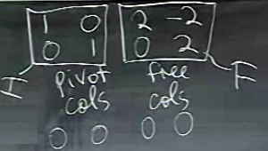

Ders 7
Vektör uzaylarından, özellikle sıfır uzayından (nullspace), ve kolon uzayından bahsettik, şimdi bu uzayların içindeki vektörleri nasıl bulacağımızı, nasıl hesaplayacağımızı göreceğiz. Yani önceki derste gördüğümüz tanımları bu derste algoritmaya dönüştüreceğiz. $Ax=0$'i çözen algoritma nedir, mesela. Örnek üzerinde görelim,
$$ A = \left[\begin{array}{cccc} 1 & 2 & 2 & 2 \\ 2 & 4 & 6 & 8 \\ 3 & 6 & 8 & 10 \end{array}\right] $$
İlk bakışta gözüme çarpan 2. kolon 1. kolonun bir katı. Ya da 2. kolon 1. ile "aynı yönde", bu iki kolon "bağımsız değil". Tabii bu bilgileri çözüm sırasında da algoritmanın bir yan etkisi olarak keşfetmeyi bekleriz. Satırlara bakıyorum, 1. ve 2. toplamı 3. ile aynı, yani 3. satır bağımsız değil. Tüm bunlar eliminasyonun yan ürünleri olarak bulunmalılar.
Ana algoritmamız eliminasyon olacak, ama onun dikdörtgensel koşula adapte edilmiş hali, pivotta sıfır var ise durmadan çözüme devam ediyoruz, vs.
Eliminasyon sırasında yapılan işlemler sıfır uzayını değiştirmez. Değil mi? Bu önemli. Bir denklem sisteminde bir denklemin (satırın) bir katını bir diğer denklemden çıkartıyorsam bu nihai çözümü değiştirmez, çünkü denklem sistemi bir bütün olarak değişmemiştir. Satır uzayı değişmez, ama dikkat, kolon uzayı değişir. Eliminasyonun neyi değiştirdiği neyi değiştirmediğini bilmek lazım.
İlk pivot'tan başlayalım (paranteze alınmış olan öğe)
$$ \left[\begin{array}{cccc} (1) & 2 & 2 & 2 \\ 2 & 4 & 6 & 8 \\ 3 & 6 & 8 & 10 \end{array}\right] $$
Pivot satırını 2 ile çarpıp 2. satırdan çıkartıyoruz. Sonra pivot satırını 3 ile çarpıp 3. satırdan çıkartıyoruz. Sonuç
$$ \left[\begin{array}{cccc} 1 & 2 & 2 & 2 \\ 0 & 0 & 2 & 4 \\ 0 & 0 & 2 & 4 \end{array}\right] $$
Şimdi sonraki pivot'u arıyoruz, normal durumda bu pivot
$$ \left[\begin{array}{cccc} 1 & 2 & 2 & 2 \\ 0 & (0) & 2 & 4 \\ 0 & 0 & 2 & 4 \end{array}\right] $$
olurdu. Ama orada sıfır var, o zaman bir alttaki satıra bakıyoruz, ki umuyoruz ki satır değiş-tokuşu yaparak o noktaya sıfır olmayan bir değer gelsin. Ama müstakbel pivot'un altındaki hücre de sıfır değerini taşıyor! Bu bir şeyin işareti aslında.. Neyin? Bu baktığımız kolonun kendinden önce gelen kolonların bir kombinasyonu olduğunun işareti. Fakat bunun üzerinde fazla durmaya gerek yok, algoritmik olarak durup düşünmeye gerek yok, eğer bir pivot'u kullanamıyorsak hemen yana geçeriz, yani
$$ \left[\begin{array}{cccc} 1 & 2 & 2 & 2 \\ 0 & 0 & (2) & 4 \\ 0 & 0 & 2 & 4 \end{array}\right] $$
Şimdi 2. satırı 3. satırdan çıkartmak yeterli. Sonuç altta. Bu matrise $U$ diyebiliriz, gerçi tam üstüçgensel (uppertriangular) sayılmaz, çünkü sıfır dengesi tam değil, ama basamaklı (echelon) formda, "hafiften" üstüçgensel. Tüm pivot'ları gösterirsek,
$$ U = \left[\begin{array}{cccc} (1) & 2 & 2 & 2 \\ 0 & 0 & (2) & 4 \\ 0 & 0 & 0 & 0 \end{array}\right] $$
İki tane pivot var; ve bu iki sayısı bu matris hakkında önemli bir bulguya işaret ediyor, bu matrisin kertesi (rank) 2. Kerte bir matrisin pivot sayısıdır.
Bu noktada geriye sokmak (backsubstitution) ile sonucu elde edebiliriz. Tabii $Ax=0$'in bir sonucu vardır, değil mi? Evet, ki bu beklenir çünkü elde 3 denklem ve 4 bilinmeyen var, bu sistemden "bir" çözüm çıkması normal. Şimdi onları bulmak istiyorum.
Bu çözümleri bulurken kritik adım şu, ki bu adıma "pivot kolonlarını / değişkenlerini ayırma" adı veriyoruz. Pivot kolonları pivot hücrelerinin olduğu kolonlar ki bunlar 1. ve 3. kolonlar, ve "serbest kolonlar" ki bunlar geri kalanları, yani 2. ve 4. Niye bu isimleri kullandım, özellikle pivot olmayan kolonlara niye "serbest" adını verdim?
Şimdi $Ux=0$'nun çözümünü bulma bağlamında düşünelim. Bu durumda $x_2,x_4$'a istediğim değeri atayabilirim. Belki cebirsel olarak tüm denklemleri görmek daha faydalı olur, $Ux=0$'i şöyle yazabiliriz,
$$ x_1 + 2x_2 + 2x_3 + 2x_4 = 0 $$
$$ 2x_3 + 4x_4 = 0 $$
Ve daha önce dediğimiz gibi bu denklem sistemini geriye sokma yöntemi ile çözebiliriz, bunlar bildiğimiz şeyler. Yeni olan, elimizde serbest değişkenler olması, ki bu değişkenlere herhangi bir değer verebiliyorum. Ve ben şimdi, onlara sistematik olarak "belli" değerler atayacağım (herhangi bir değer olabildiklerine görelim, istediğim değeri atayabilirim), mesela
$$ x = \left[\begin{array}{r} \\ 1\\ \\ 0 \end{array}\right] $$
Yani $x_2=1,x_4=0$ seçtim. Şimdi üstteki 2. formülde $x_4=0$ geriye koyarsam, $x_3=0$ elde ederim. $x_2=1$ ise, $x_1=-2$. Böylece tamamlanmış $x$,
$$ x = \left[\begin{array}{r} -2\\ 1\\ 0\\ 0 \end{array}\right] $$
İşte sıfır uzayında bir vektör bu, çünkü bu $Ax=0$'in çözümlerinden biri.
Başka hangi çözümler olabilir? Elimizdeki çözümden daha fazla çözüm üretebilir miyiz? Evet. Üstteki vektörü katlarını alırsak elde edilen vektörler de sıfır uzayındadır, bir $c$ sabiti kullanalım,
$$ x = c \cdot \left[\begin{array}{r} -2\\ 1\\ 0\\ 0 \end{array}\right] $$
Bu bize 4 boyutlu uzayda olan bir çizgiyi tarif ediyor. Peki sıfır uzayının tamamını tarif etmiş olduk mu? Hayır. Çünkü iki tane serbest değişkenim vardı, onlar için belli bir seçim yaptım. Ama şöyle bir seçim de yapabilirdim,
$$ x = \left[\begin{array}{r} \\ 0\\ \\ 1 \end{array}\right] $$
Yani $x_2=0,x_4=1$. Bu yeni değerleri geri koyalım; $x_3=-2$, ve 1. denklem bize $x_1=2$ verir. Hepsi (ve bir $d$ sabiti üzerinden),
$$ x = d \cdot \left[\begin{array}{r} 2\\ 0\\ -2\\ 1 \end{array}\right] $$
Terminoloji; üstte belli değerler üzerinden elde ettiğim iki çözüme "özel çözümler" ismi veriyorum, çünkü kendi seçtiğim belli "özel" değerler üzerinden o çözümlere eriştim.
Nihai çözüm, yani sıfır uzayı üstte hesapladığım iki özel çözümün tüm lineer kombinasyonları olacaktır.
Soru: serbest değişken sayısı nereden gelir? Kerte (rank) $r$ ise, kolon boyutu $n$ olan matris için $n-r = 4-2 = 2$ serbest değişken vardır. Kertenin kolon boyutundan az olması o matrisin sıfır uzayının büyüklüğü hakkında bir işaret yani.
Azaltılmış Basamaklı (Reduced Echelon) Matris
Eliminasyon sonrası elde ettiğimiz matrisi hatırlarsak,
$$ \left[\begin{array}{cccc} 1 & 2 & 2 & 2 \\ 0 & 0 & 2 & 4 \\ 0 & 0 & 0 & 0 \end{array}\right] $$
ki bu matris basamaklı, üstüçgensel sayılabilecek bir matristir. 3. satırın tamamen sıfır olduğuna dikkat edelim, bu oldu çünkü orijinal matriste 3. satır, 1. ve 2. satırların bir kombinasyonu idi ve eliminasyon bu durumu keşfetti, üstteki 3. satır bu sebeple tamamen sıfır haline geldi.
Neyse, şimdi bu matrisi biraz daha temizlemek istiyorum. Ne yapabilirim?
Eliminasyon işlemini yukarı doğru uygulayamaz mıyım? Böylece pivotların üstünde de, altında olduğu gibi, sıfır değerleri gelebilir - ki bu azaltılmış basamaklı matrislerin tanımı zaten; bu matrislerde pivotların hem altında hem üstünde sıfır vardır.
İlerleyelim, 2. satırı 1. satırdan çıkartırsam,
$$ \left[\begin{array}{cccc} (1) & 2 & 0 & -2 \\ 0 & 0 & (2) & 4 \\ 0 & 0 & 0 & 0 \end{array}\right] $$
Yeni bir sıfır elde etmiş olduk (pivotlar parantezde). Bu arada pivotlarda hep 1 sayısı görmek istiyorum, 2. satırı 2 ile bölebilirim, bu denklem sistemini değiştirmez, o zaman
$$ R = \left[\begin{array}{cccc} (1) & 2 & 0 & -2 \\ 0 & 0 & (1) & 2 \\ 0 & 0 & 0 & 0 \end{array}\right] $$
Bu formdaki bir matrise azaltılmış satır basamaklı formu (reduced row
echelon form -rref-) adı veriliyor. Python sympy paketindeki
rref çağrısı bu çözümü yapar.
import sympy
A = sympy.Matrix([[1., 2., 2., 2. ],
[2., 4., 6., 8. ],
[3., 6., 8., 10.]] )
print A.rref()[0]
[1.0, 2.0, 0, -2.0]
[ 0, 0, 1.0, 2.0]
[ 0, 0, 0, 0]
$R$ olabilecek en özet bilgiyi içeriyor. Pivot kolonları 1,2 görülüyor, pivot satırları 1,2 aynı şekilde. Bu arada eğer pivot kolon ve satırları dışarı çekmiş olsam, bu matris bir birim (identity) matrisi olurdu.
Eğer $Ux=0$ yerine $Rx=0$'i görmek istersem,
$$ x_1 + 2x_2 - 2x_4 = 0 $$
$$ x_3 + 2x_4 = 0 $$
Umarım anlaşılıyordur, $Ax=0$ ile başladık, sonra "orta nokta" olarak görebileceğimiz $Ux=0$'i elde ettik, ve şimdi üstte $Rx=0$'i görüyoruz... Bu sistemlerin hepsi birbiri ile eşdeğerdir, çünkü birinden diğerine giderken sistemi bozmadık. Bir satırı bir şey ile çarpıp bir diğerinden çıkartmak gibi işlemler uyguladık ki bu tür işlemler denklem sistemini bozmuyor.
Tüm çözümler,
$$ x = c \cdot \left[\begin{array}{r} -2\\ 1\\ 0\\ 0 \end{array}\right] + d \cdot \left[\begin{array}{r} 2\\ 0\\ -2\\ 1 \end{array}\right] $$
Önemli nokta: üstteki serbest değişkenlerin değerleri $R$'içindeki değerlerin negatifi alınmış hali. Niye?

Eğer pivot kolonlarını bir araya, serbest (free) kolonlarını biraraya koyarsam üstteki şekil ortaya çıkar.
$$ R = \left[\begin{array}{cccc} I & F \\ 0 & 0 \end{array}\right] $$
Üstte görülen oldukça tipik bir rref matrisidir. $I$'nin boyutları $r \times r$, çünkü $r$ tane pivot kolonu var, $F$'nin kolon sayısı $n-r$, çünkü o kadar serbest değişken var. Peki özel çözümler nedir? Madem matris bir blok matris halinde (yani $I,F$ bloklar olarak bir diğerinin içinde), eh o zaman $Rx = 0$'in çözümlerini direk bu matris üzerinden elde edebilirim. Bir sıfır uzayı matrisi oluşturacağım ki bu matrisin kolonları özel çözümüm olacak. Bu matrise $N$ diyeyim, öyle ki $RN = 0$ olsun,
$$ N = \left[\begin{array}{rr} -F & I \end{array}\right] $$
Eksi işaret nereden geldi? $Rx=0$'i şöyle gösterirsek,
$$ \left[\begin{array}{rr} I & F \end{array}\right] \left[\begin{array}{l} x_{pivot} \\ x_{serbest} \end{array}\right] = 0 $$
Açarsak,
$x_{pivot} = -F x_{serbest}$
Yeni bir örnek çözelim.
$$ A = \left[\begin{array}{rrr} 1 & 2 & 3 \\ 2 & 4 & 6 \\ 2 & 6 & 8 \\ 2 & 8 & 10 \\ \end{array}\right] $$
Çözmeye başlamadan önce hemen ilk bakışla ne gördüğümüzü söyleyelim; Kaç tane pivot olmasını, yani kaç tane kolonun pivot'unun olmasını beklemeliyiz? Bu matriste üç tane kolon var, peki üç tane pivot elde edecek miyiz? Hayır, çünkü 3. kolon 1. ve 2. kolonların bir toplamı. Bu kolon yeni bir enformasyon sağlamıyor, yani "bağımsız değil". Çözüm sırasında benim beklentim şöyle, 1. ve 2. kolon pivot olacak, ama 3. bağımlı olduğu için serbest kolon olacak. Eliminasyon bunu bulmalı.
2 tane 1. satırı 2., 3. ve 4. satırdan çıkartırsam,
$$ \left[\begin{array}{rrr} 1 & 2 & 3 \\ 0 & 0 & 0 \\ 0 & 2 & 2 \\ 0 & 4 & 4 \\ \end{array}\right] $$
Şimdi sonraki pivot'a gidiyorum, yani (2,2) kordinatına, orada sıfır var. Altına gidiyorum, orada 2 var. Demek ki satır değiş-tokuşu lazım, bunu yaptıktan sonra istediğim noktada pivot var,
$$ \left[\begin{array}{ccc} (1) & 2 & 3 \\ 0 & (2) & 2 \\ 0 & 0 & 0 \\ 0 & 4 & 4 \\ \end{array}\right] $$
- tane 2. satırı 4.'den çıkartıyorum, nihayet $U$'yu elde ediyorum,
$$ U = \left[\begin{array}{rrr} 1 & 2 & 3 \\ 0 & 2 & 2 \\ 0 & 0 & 0 \\ 0 & 0 & 0 \\ \end{array}\right] $$
Kerte yine $r=2$. Kaç tane özel çözüm var? $3-2=1$, demek ki 1 tane serbest kolon var. Özel çözümü bulmak için serbest değişkene 1 değeri veririm,
Denklem halinde
$$ x_1 + 2x_2 + 3x_3 = 0 $$
$$ 2x_2 + 2x_3 = 0 $$
$x_3=1$ ile başlarsak geriye koyma ile,
$$ x = \left[\begin{array}{r} -1\\ -1\\ 1 \end{array}\right] $$
Hızlı bir doğrulama yapmak gerekirse, üstteki çözüm ne diyor? $A$'nin 1. ve 2. kolonundan -1 tane ve 3. kolonundan 1 tane alıp toplarsam sonuç sıfır olacaktır. Ve hakikaten de bu doğru, zaten problemin başında 1. ve 2. kolonun toplamının 3.'ye eşit olduğunu söylemememiş miydik? Evet.
Tüm çözümler,
$$ x = c \cdot \left[\begin{array}{r} -1\\ -1\\ 1 \end{array}\right] $$
Sınavda üstteki çözümü göstermenizi beklerim. Daha ilerideki sınavlarda sıfır uzayın "bazını" soracağım, o zaman $c$ olmadan tek vektörü verebilirsiniz, ama sıfır uzayını istiyorsam üstteki problem için tüm bir çizgiyi vermeniz lazım.
Bu örnekte gidilecek sonraki doğal adım, rref formuna gitmek. 2. satırı alıp 1. den çıkartabilirim, ve 2. satırı 2'ye bölebilirim,
$$ R = \left[\begin{array}{rrr} 1 & 0 & 1 \\ 0 & 1 & 1 \\ 0 & 0 & 0 \\ 0 & 0 & 0 \\ \end{array}\right] $$
$I$ kısmı görülüyor, sol üst köşedeki $2 \times 2$ boyutlu blok matris. Onun hemen yanındaki $2 \times 1$ boyutlu içinde sadece 1 olan kısım $F$. Üstte $x$ için gösterdiğimiz bölümde $F$'in negatifi olduğunu dikkat, yani
$$ x = c \cdot \left[\begin{array}{r} -F \\ I \end{array}\right] $$
ki $c$'nin çarptığı matris $N$ matrisi, yani sıfır uzayı matrisidir, ki bu matrisin kolonları bizim özel çözümlerimiz.
$Ax=0$ hakkında söyleyecek daha fazla bir şey kalmadı sanıyorum. $Ax=b$ konusunda söyleyeceklerimiz daha var, ama bu bir sonraki derste.